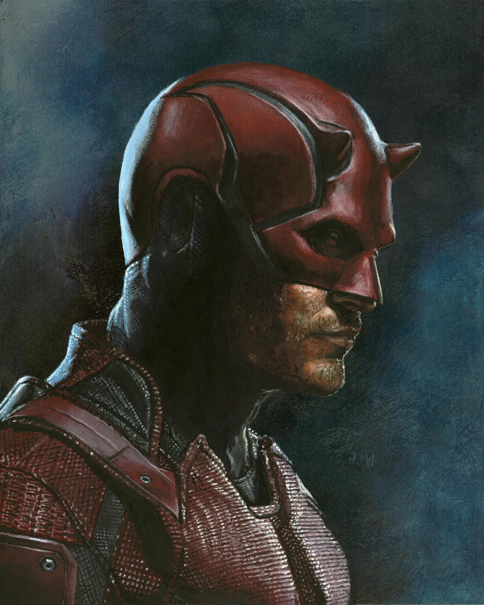

Michael Flowers: An Origin Story

I was born and raised in Hell's Kitchen, the mythical home of daredevil.
As a journalist, I have an innate belief in justice, fairness, and balance.
Also want to write stories that allow what lives in the darkness to go forth into the light.
- JP Morgan ties to Epstein Big Banks and the Clandestine Oligarchy.
- Gaza Journalist killed by Israeli airstrike Fatma Houssouna epitomized the fearlessness of a heroic truthteller.
- Heatbreak, Hoops and Hope Through Parkland and Covid, Columbia's Abbey Hsu never gave up. Love and Resilience.